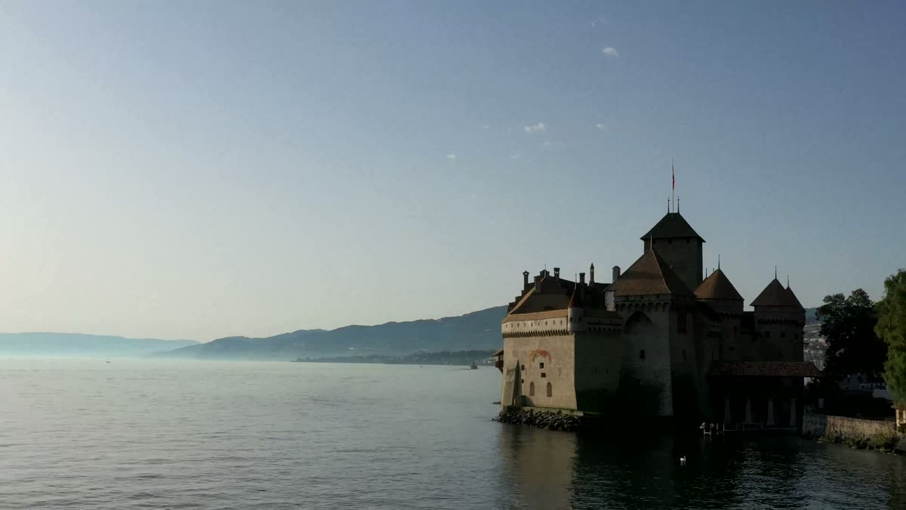

VELLARIO · COMO / DEMO MOBILE
Filmati provvisori, sostituibili senza modificare la struttura del sito. I luoghi sono identificati correttamente e non rappresentano yacht prodotti da VELLARIO.

01 / COMO
PLACEHOLDER · 4K MASTER
Como.
Filmato temporaneo · Lago di Como, Italia
Anteprima mobile 1080p

02 / ITALIAN DOLCE VITAItalian
PLACEHOLDER · 4K MASTER
Italian
Dolce Vita.
Placeholder paesaggistico · Lago di Bled, Slovenia · NON Lago di Como
Anteprima mobile 1080p
Fonte: Danny Rest, Wikimedia Commons · CC BY 3.0
Five distinct models.
Le barche continuano a usare soltanto i render e video del loro archivio originale. I video di laghi non sono attribuiti ai modelli.
Apri i cinque modelli
04 / HISTORY & LEGACYHistory
PLACEHOLDER · 4K MASTER
History
& Legacy.
Placeholder visivo · Castello di Chillon, Lago di Ginevra · NON patrimonio lariano
Anteprima mobile 1080p
Design & Craftsmanship.
Qui manterremo materiali e dettagli dei progetti autentici. Nessun filmato generico viene presentato come lavorazione VELLARIO.

06 / THE MAISONThe
PLACEHOLDER · 4K MASTER
The
Maison.
Placeholder paesaggistico · Lago di Ginevra, Svizzera · NON Lago di Como
Anteprima mobile 1080p
Fonte: Quahadi, Wikimedia Commons · CC BY-SA 3.0